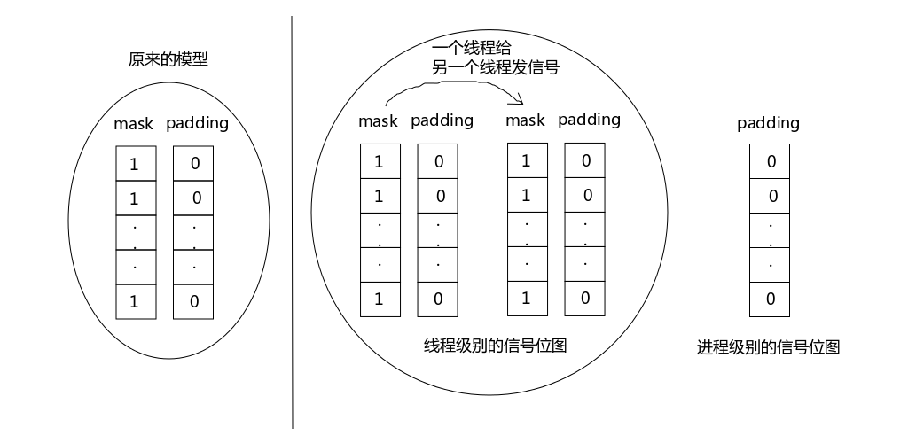

线程控制
之前我们在创建线程的时候都是使用的默认属性，本章主要讨论的是自定义线程的属性。使用默认属性基本上能解决掉遇到的大部分问题，所以自定义属性在实际项目中用得比较少。
1.1 线程属性
《APUE》第三版 P341 表中的属性可以用来限定一个进程能创建线程的最大数量，但是限定线程数量的宏不必太当真，因为在上一篇博文中我们说过了一个线程能创建的线程的数量是受很多因素影响的，并非一定是以这几个宏值为准的。
1 | int pthread_create(pthread_t *thread, const pthread_attr_t *attr, void *(*start_routine)(void *), void *arg); |
线程属性使用 pthread_attr_t 类型表示。
1 |
|
1 |
|
上面的栗子就是通过线程的属性修改了为每个线程分配的栈空间大小，这样创建出来的线程数量与默认的就不同了。
线程属性使用 pthread_attr_init(3) 函数初始化，用完之后使用 pthread_attr_destroy(3) 函数销毁。
线程属性不仅可以设定线程的栈空间大小，还可以创建分离的线程等等。
1.1.1 互斥量属性
1 | int pthread_mutex_init(pthread_mutex_t *restrict mutex, |
互斥量属性使用 pthread_mutexattr_t 类型表示，与线程属性一样，使用之前要初始化，使用完毕要销毁。
pthread_mutexattr_init(3) 函数用于初始化互斥量的属性，用法跟线程的属性很相似。
1.1.1.1 互斥量属性常用函数
pthread_mutexattr_init();
pthread_mutexattr_destroy();
pthread_mutexattr_getpshared();
pthread_mutexattr_setpshared();
1 | // pthread_mutexattr_getpshared, pthread_mutexattr_setpshared - get and set the process-shared attribute |
函数名称里面的 p 是指 process，这两个函数的作用是设定线程的属性是否可以跨进程使用。这条有点乱是吧，线程的属性怎么能跨进程使用呢？别急，我们先看看 clone(2) 函数。
1 | // clone, __clone2 - create a child process |
clone(2) 进程的 flags 如果设置了 CLONE_FILES 则父子进程共享文件描述符表，正常情况文件描述符表是线程之间共享的，因为多线程是运行在同一个进程的地址空间之内的。
虽然 clone(2) 函数的描述是创建子进程，但实际上如果将 flags 属性设置得极端分离(各种资源都独享)，相当于创建了一个子进程；
而如果 flags 属性设置得极端近似(各种资源都共享)，则相当于创建了兄弟线程。所以对于内核来讲并没有进程这个概念，只有线程的概念。你创建出来的到底是进程还是线程，并不影响内核进行调度。
如果需要创建一个“东西”与当前的线程既共享一部分资源，又独占一部分资源，就可以使用 clone(2) 函数创建一个既不是线程也不是进程的“东西”，因为对内核来说进程和线程本来就是模糊的概念。
现在能理解为什么上面说 pthread_mutexattr_setpshared(3) 函数的作用是设定线程的属性是否可以跨进程使用了吧？
互斥量分为四种，不同的互斥量在遇到不同的情况时效果是不同的，《APUE》第三版 P347 有图12-5 说明了这个现象，LZ 把它照搬到这里。
| 互斥量类型 | 没有解锁时重新加锁 | 不占用时解锁 | 在已解锁时解锁 |
|---|---|---|---|
| PTHREAD_MUTEX_NORMAL（常规） | 死锁 | 未定义 | 未定义 |
| PTHREAD_MUTEX_ERRORCHECK（检错） | 返回错误 | 返回错误 | 返回错误 |
| PTHREAD_MUTEX_RECURSIVE（递归） | 允许 | 返回错误 | 返回错误 |
| PTHREAD_MUTEX_DEFAULT（默认，我们平时使用的就是这个） | 未定义 | 未定义 | 未定义 |
| 表1 互斥量类型行为 |
LZ 解释一下表头上的描述是什么意思：
1）没有解锁时重新加锁：当前 mutex 已 lock，再次 lock 的情况；
2）不占用时解锁：他人锁定由你解锁的情况；
3）在已解锁时解锁：当前 mutex 已 unlock，再次 unlock 的情况；
1.1.2 条件变量的属性
1.1.2.1 条件变量常见属性
pthread_condattr_init();
pthread_condattr_destroy();
1.1.3 读写锁属性
1.2 重入
第一次见到重入是在信号阶段是吧。
如果一个函数在相同的时间点可以被多个线程安全地调用，就称该函数是线程安全的。
POSIX 标准要求，在线程标准制定之后，所有的库必须支持线程安全，如果不支持线程安全需要在函数名添加 _unlocked 后缀，或发布一个支持线程安全的函数，函数名要添加 _r 后缀。
我们在 man 手册中已经见过很多带有 _r 后缀的函数了。
1 | // 拿puts举例 |
为什么看不到 abccbabac, 是因为puts函数有这样的功能，
先锁住缓冲区，把内容填充进去，然后unlock。当三个puts几乎同时调用的时候。就看谁先抢到缓冲区。
1.2.1 多线程IO
1.2.2 线程与信号
1.2.3 线程与fork
4.线程特定数据
就是为了某些数据支持多线程并发而做的改进。最典型的就是 errno，errno 最初是全局变量，现在早已变成宏定义了。
我们把 errno 预编译一下，看看它的庐山真面目。
1 |
|
1 | $ gcc -E errno.c |
1.3 线程的取消
在上一篇博文中我们说过，pthread_cancel(3) 函数只是提出取消请求，并不能强制取消线程。
线程的取消分为两种情况：允许取消 或 不允许取消。
pthread_cancel(3) 提出取消请求后，是否允许取消是由被请求取消的线程自己决定的。
不允许取消没什么好说的，我们说说允许取消。
允许取消分为两种情况：异步 cancel 和 推迟 cancel（默认）
1）异步 cancel：是内核的操作方式，这里不做解释。
2）推迟 cancel：推迟到取消点再响应取消操作。取消点其实就是一个函数，收到取消请求时取消点的代码不会执行。
《APUE》第三版 P362 图12-14 都是可能导致阻塞的系统调用，它们都是 POSIX 定义的一定存在的取消点。P363 图12-15 是 POSIX 定义的可选取消点，这些函数实际是否为取消点要看平台具体的实现。
为什么要采用推迟取消的策略，而不是收到请求在任何地方都立即取消呢？我们先举个栗子说明这个问题，大家请看下面的伪代码：
1 | thr_func() |
在线程执行函数运行的任何时候都可能收到取消请求，假设上面的函数刚刚使用 malloc(3) 函数动态分配了一段内存，还没来得及挂钩子函数的时候就收到了一个取消请求，如果立即响应这个取消请求就会导致内存泄漏。而挂载钩子函数的宏 pthread_cleanup_push 不是取消点，所以会推迟这个取消请求继续工作。等它把钩子函数挂载完毕之后继续运行来到 open(2) 函数，由于 open(2) 函数时有效的取消点，所以响应了这个取消请求，线程被取消并且通过钩子函数释放了上面 malloc(3) 所申请的空间。这就是推迟取消最明显的作用。
pthread_setcancelstate(3) 函数的作用就是修改线程的可取消状态，可以将线程设置为可取消的或不可取消的。
pthread_setcanceltype(3) 函数用来修改取消类型，也就是可以选择 异步 cancel 和 推迟 cancel。
pthread_testcancel(3) 函数的作用是人为放置取消点。假如某个线程一启动就疯狂的做数学运算10分钟，没有调用任何函数，则这个线程无法响应取消，为了使这个线程可以响应取消就可以通过这个函数人为放置取消点。
1.3.1 线程和信号

图1 线程级别的信号位图
在前面讨论信号的博文中，LZ 给大家画过一张信号处理过程的草图，在那幅图中简单的把一个线程的标准信号画成了两个位图。而实际上每个线程级别都持有一个 mask 位图和一个 padding 位图，每个进程级别持有一个 padding 位图而没有 mask 位图。从内核态回到用户态之前，当前线程先用自己的 mask 位图与进程级别的 padding 做按位与（&）运算，如果有信号就要去处理；然后再用自己的 mask 位图与自己的 padding 位图做按位与运算，再处理相应的信号。
所以其实是哪个线程被调度，就由哪个线程响应进程级别的信号。
由此可见，线程之间也是可以互相发信号的。
1 | // pthread_kill - send a signal to a thread |
pthread_kill(3) 函数的作用就是在线程阶段发信号，thread 表示给哪个线程发送信号，sig 是发送哪个信号。
由于这个函数使用起来很简单，这里 LZ 就不把栗子贴出来了，大家自己动手写写试试吧。
pthread_sigmask(3) 函数的作用时人为的干预线程级别的 mask 位图。与 sigsetmask(3) 函数很像，大家自己动手试试吧。
1.3.2 线程和 fork
这一小节主要说的是 fork(2) 在不同平台上实现有歧义。
在fork的发展过程中主要有两大阵营，一大阵营使用写时拷贝技术，另一大阵营使用类似 vfork(2) 的策略。
这两种策略在前面我们讨论进程关系的博文中都讨论过，感兴趣的童鞋可以自己看看书上的描述，这里就不做太多的介绍了。
1.3.3 线程和 I/O
这一小节主要就是介绍了下 pread(2) 和 pwrite(2) 函数，这两个函数实际当中用得并不多，感兴趣的童鞋自己看看书上的介绍或者看看 man 手册里的说明吧，这里不做过多的讨论了。如果有什么问题可以在评论中留言。
到这里 POSIX 标准的线程就介绍完了。*nix 平台线程的标准不只有 POSIX 一家，还有像 OpenMP 等标准也定义了不同的线程实现方式。
1.3.4 OpenMP 标准
我们使用 OpenMP 标准写一个 Hello World 程序。
1 |
|
OpenMP 标准的多线程就是使用 # 这种预处理标签实现的，使用 GCC 编译的时候需要加 -fopenmp 参数。
1 | $ make hello |
从上面的运行结果可以看出来，线程已经创建，并且已经发生了竞争。
GCC 从 4.0 以上的版本开始支持 OpenMP 标准。
由于 OpenMP 标准不是 《APUE》里面介绍的，所以我们这里就不做过多的探讨了，感兴趣的小伙伴们可以去 http://www.openmp.org 了解更多内容